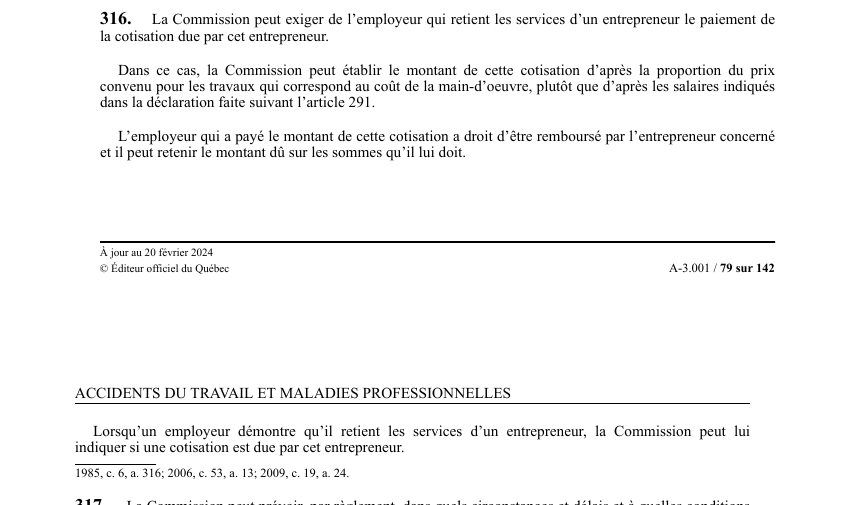

art-316-LATMP : cotisation de l'entrepreneur (donneur d'ouvrage)
Mécanisme de responsabilité en cascade : le donneur d'ouvrage peut se faire réclamer la cotisation impayée de l'entrepreneur dont il retient les services, quitte à se faire rembourser ensuite.
- Faculté et non automatisme : la CNESST peut exiger ce paiement, elle n'y est pas tenue.
- Assiette de calcul possible : la proportion du prix convenu pour les travaux qui correspond au coût de la main-d'oeuvre, plutôt que les salaires déclarés suivant l'art. 291.
- Recours du donneur d'ouvrage : droit d'être remboursé par l'entrepreneur concerné et faculté de retenir le montant dû sur les sommes qu'il lui doit.
- Prévention du risque : l'employeur qui démontre qu'il retient les services d'un entrepreneur peut demander à la CNESST de lui indiquer si une cotisation est due par cet entrepreneur.
🌐 LegisQuébec · 📄 PDF officiel (page 79)
Texte officiel
La Commission peut exiger de l’employeur qui retient les services d’un entrepreneur le paiement de la cotisation due par cet entrepreneur.
Dans ce cas, la Commission peut établir le montant de cette cotisation d’après la proportion du prix convenu pour les travaux qui correspond au coût de la main-d’oeuvre, plutôt que d’après les salaires indiqués dans la déclaration faite suivant l’article 291.
L’employeur qui a payé le montant de cette cotisation a droit d’être remboursé par l’entrepreneur concerné et il peut retenir le montant dû sur les sommes qu’il lui doit.
Lorsqu’un employeur démontre qu’il retient les services d’un entrepreneur, la Commission peut lui indiquer si une cotisation est due par cet entrepreneur.
Texte de l’article 316 LATMP, extrait de la couche texte du PDF officiel (page 79), sans OCR ni retouche. La capture ci-dessous et le PDF font foi.
{kind=link}

Toucher l'image pour l'agrandir🔗 Ouvrir a cette page : LATMP.pdf : page 79 · texte a jour au 20 février 2024
Voir aussi
- art. 315.1 · l'employeur visé au premier alinéa de l'art.
- art. 317 · faculté : la CNESST peut prévoir par règlement les circonstances, délais et conditions dans lesquels elle peut déterminer à nouveau la classification, l'imputation du coût des prestations, la cotisation, la pénalité et les intérêts d'un employeur.
- ↑ Loi : LATMP
Pages qui pointent ici (6)
- art-2-LMRSST : couverture des travailleurs domestiques Recueil législatif
- art-315.1-LATMP : versements périodiques au ministre du Revenu Recueil législatif
- art-315.5-LATMP : entente avec le ministre du Revenu (versements) Recueil législatif
- art-317-LATMP : nouvelle détermination par règlement Recueil législatif
- art-5-LATMP : location ou prêt de services : employeur Recueil législatif
- art-8.4-LATMP : employeur d'un travailleur domestique : exclusions Recueil législatif